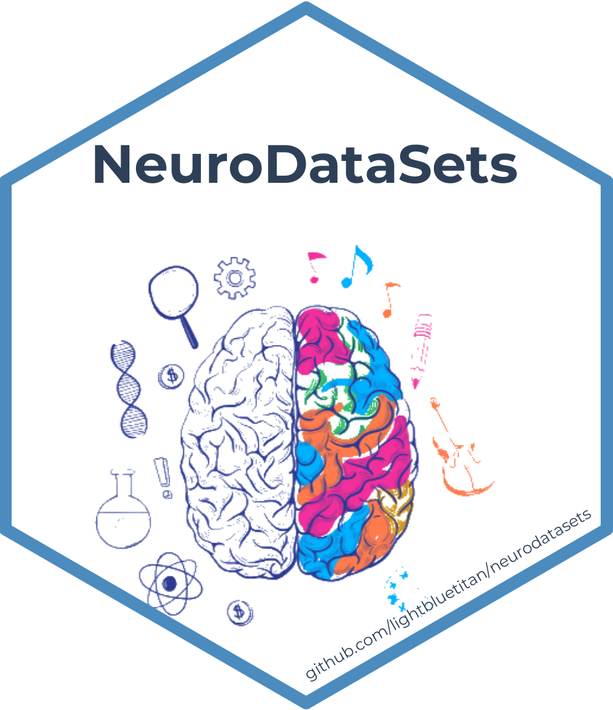

Pediatric High-Grade Glioma Clinical Dataset
Source:R/data-documentation.R
pediatric_glioma_tbl_df.RdThis dataset, pediatric_glioma_tbl_df, is a tibble containing comprehensive clinical and tumor characteristics for 57 pediatric patients with high-grade glioma. The data includes 22 variables covering demographic, symptomatic, pathological, treatment, and outcome measures.
Usage
data(pediatric_glioma_tbl_df)Format
A tibble with 57 observations and 22 variables:
- Age
Numeric: Patient age in years
- Gender
Character: Patient gender
- Headache
Character: Headache presence/characteristics
- Epilepsy
Character: Epilepsy status
- Hemparesis
Character: Hemiparesis presence
- increaseICT
Character: Increased intracranial pressure indicators
- Pathology
Character: Tumor pathology classification
- Pathology_Grade
Numeric: WHO tumor grade (III-IV)
- Thalamic_extension
Character: Thalamic involvement
- Bil_extension
Character: Bilateral extension
- Post_extension
Character: Posterior fossa extension
- BrainStem_extension
Character: Brainstem involvement
- MultiFocality
Character: Multifocal tumor presence
- Midlineshift
Character: Midline shift presence
- Edema
Character: Peritumoral edema characteristics
- Approx_Tumor_Vol
Numeric: Estimated tumor volume (cm³)
- ExtentofSurgicalresection
Character: Surgical resection extent
- Shunt
Character: Ventricular shunt presence
- ResidualsizeonMRI
Character: Post-surgical residual tumor
- Neurostate
Character: Neurological status
- PSBeforeRT
Numeric: Performance status pre-radiotherapy
- Died
Character: Mortality outcome
Source
Kaggle dataset: Pediatric High-Grade Glioma Dataset. URL: https://www.kaggle.com/datasets/amraam/pediatric-high-grade-glioma-dataset
Details
The dataset name has been kept as 'pediatric_glioma_tbl_df' to avoid confusion with other datasets in the R ecosystem. This naming convention helps distinguish this dataset as part of the NeuroDataSets package. The suffix 'tbl_df' indicates that the dataset is a tibble. The original content has not been modified.